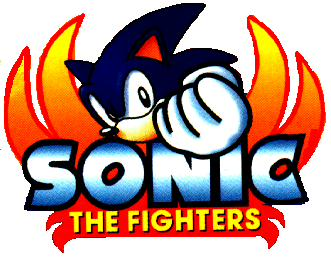

Sonic HQ - The Games Page
Sonic Championship - Sonic The Fighters

A 3D fighter from AM2, the same crew that gave us Virtua Fighter - Now located in the Smithsonian Institute for being one of the videogames that changed the industry as we know it - and Fighting Vipers, Sonic The Fighters in Japan or Sonic Championship in America is the game that captured the Fighting Game craze that swept the planet! The game's apparently more simplistic than FV or VF, though. The playable characters were Sonic, Tails, Knuckles, Amy, Espio, and introduced us to Bark the Polarbear and Bean the Dynamite Duck!!!! The boss characters were of course Fang The Sniper (Nack The Weasel), Metal Sonic and Dr. Eggman (Doc Robotnik). HOWEVER There were other inceptions in its release as well. It was the SECOND game to come out for Arcade stystems AFTER Sonic Arcade and it was to be the next Sega Saturn game. But with the Saturn dwindling into next than nothing it was never released, its only hope other than arcades being the Sega Dreamcast. Speaking of Arcades --- Many people have A. Heard of this game and never played it, B. Played it or C. Dont even know what the heck it is. Well thats because American release was very limited. So that should explan that.
If the sound track CD is any reference point, the Zones (arenas) were:
South Island Zone
Flying Carpet Zone
Aurora Icefield Zone
Mushroom Hill Zone
Canyon Cruise Zone
Dynamite Plant Zone
Giant Wing Zone
Death Egg Zone - The Giant Eye
Death Egg Zone - Robotniks Hangar